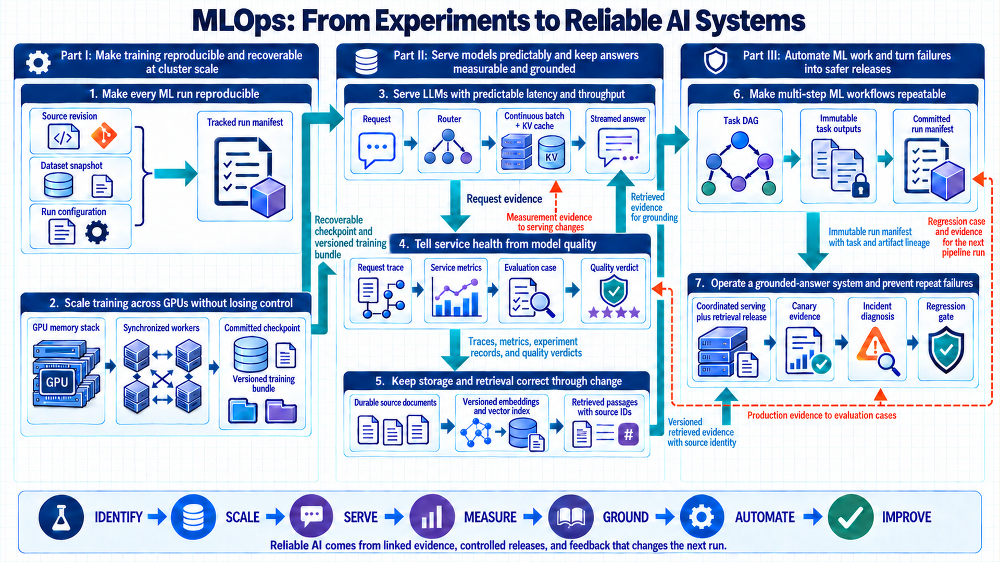
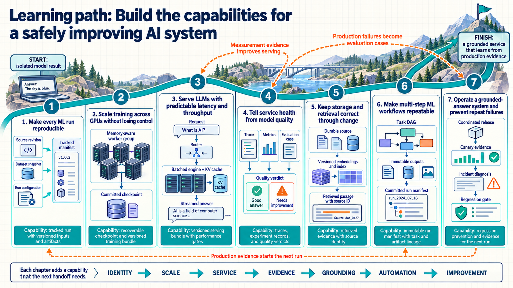

Introduction: the operating problem
A model can be impressive in an isolated experiment and still fail as a product. Production introduces traffic, failures, shared resources, changing data, delayed ground truth, cost limits, deployment risk, and a reproducibility requirement. Together, these constraints turn a one-time model result into a system whose behavior, state, and changes can be explained.
Machine learning operations, or MLOps, connects model development to the systems that run, measure, and maintain it. This book develops that platform: the compute, serving software, measurements, storage, and scheduled work needed to keep a model service useful as demand and data change. The starting knowledge is basic Python functions and loops, files and processes, and arithmetic with rates and percentages. A GPU is a processor that can perform many numerical operations in parallel. A tensor is an array of numbers, such as a vector or matrix, that model software processes on a CPU or GPU.
A reliable machine learning system begins with saved inputs and software that make a run reproducible. It then scales computation, serves a large language model (LLM) under time and memory constraints, measures service and model behavior, stores lasting state, and connects the work into pipelines. A question-answering service that uses retrieved source material connects this complete loop. The book follows three stages. Part I establishes reproducible training at cluster scale. Part II develops reliable model services with measurement and retrieval. Part III connects automated workflows to reliable system operation.
A model’s numerical parameters, often called weights, determine how it transforms an input into a prediction. Three operating modes use these same parameters differently. The distinction matters because it changes what must be stored, measured, and recovered.
- Inference takes a new input and produces a prediction using fixed parameters. A correct target is not required to produce that output. A language model takes prompt text and predicts the next pieces of text, called tokens. The service can measure response time and output rate immediately, but a quality judgment needs additional evidence. Request caches and logs can change during inference even though the model parameters do not.
- Training adjusts parameters using examples and an objective. In supervised training, each example includes an input and a target. A forward pass computes a prediction and intermediate values called activations. A loss function compares prediction and target to produce a numerical penalty. Backpropagation works backward through the computation to find gradients, which describe how changing each parameter would change the loss locally. An optimizer uses those gradients to update the parameters. Some optimizers also retain running statistics of earlier gradients, called optimizer state. Activations and gradients are working data for a step. Parameters and optimizer state must survive between steps.
- Evaluation runs fixed parameters on selected cases and measures the resulting predictions against a reference or stated criterion. Held-out examples are kept out of parameter fitting so that the measurement can reveal errors beyond the training examples. For a labeled task, the reference is the target. For a generated answer, it may be source evidence and a human scoring rule. Evaluation writes predictions and measurements but does not update the model parameters. Choosing a later training change from those results is a separate action, and repeatedly selecting against the same cases can make their scores too optimistic.
A small numerical example makes the state changes visible. Suppose an illustrative one-parameter model predicts normalized compute demand by multiplying one numeric workload input by one weight. Input and demand are dimensionless multiples of chosen baseline values. The following values are illustrative, not production measurements. The training example has input 2 and target 1, and the initial weight is 0.2.
- The forward pass multiplies 2 by 0.2 and predicts 0.4. Prediction minus target is -0.6. Squaring that error gives a loss of 0.36.
- For this squared-error objective, the gradient is twice the error multiplied by the input. Multiplying 2 by -0.6 and then by 2 gives -2.4. Its negative sign says that a small increase in the weight reduces the loss near the current value.
- A simple gradient-descent optimizer with learning rate 0.1 subtracts 0.1 times -2.4 from the old weight. The new weight is 0.44. Repeating the forward pass on the training example predicts 0.88 and gives a squared error of 0.0144. This step improved that example. It does not establish performance on other inputs.
- Evaluation freezes the weight at 0.44. A separate held-out example with input 1 and target 0.5 produces prediction 0.44 and squared error 0.0036. The evaluation record stores the example, prediction, target, score, and model version. It performs no optimizer step.
- If the candidate passes the release criteria, inference can use weight 0.44 for a new input of 3 and return 1.32. That request needs no target to run. If a measured target arrives later, it can support evaluation or become an example in a future training set after the appropriate checks.
This trace is the smallest version of the operating loop. Training produces changed model state, evaluation produces evidence for a release decision, and inference produces outputs and service measurements. A saved training state is a checkpoint. A deployable package of the model and its runtime inputs is a serving bundle. Their identities must connect to the input data and software that produced them, which is the problem Chapter 1 develops. The simple optimizer above needs no running statistics, while the Adam optimizer discussed in Chapter 2 keeps additional state. A neural network also retains more intermediate activations than this one-multiply example.
Evaluation can itself use a model. A judge performs inference on a question, generated answer, source evidence, and scoring rule. Those items are its input, and its judgment is the output. The answer-producing model and the judge both keep fixed parameters. To evaluate the judge, its judgment is compared with a separate human reference label. Agreement with that reference measures the judge, not the response time or training loss of the answer-producing model. Chapter 4 develops these distinct measurements.
Scope boundaries
The focus is the platform around model work: allocating compute, coordinating training, serving requests, measuring behavior, preserving data, and automating repeatable work. Low-level GPU kernel authoring, proprietary hardware compilation, and model architecture design are outside this scope. Product names identify examples of component roles, not requirements to use a particular provider. Packaging can fix the application libraries and runtime files without fixing the host machine’s GPU driver. The required compatibility remains a separate condition, explained in Section 1.4.
Several terms connect the stages below. In distributed training, a rank is one process’s integer identity within a cooperating group, and world size is the number of processes in that group. Local rank identifies the process within its node, commonly to choose a GPU. These identities let the software direct communication to the right participants. Section 2.5 explains how the group is formed.
For language-model inference, prefill processes the prompt tokens, and decode generates successive output tokens. The key-value (KV) cache stores numerical attention state from earlier tokens so the engine can reuse that state during generation. It is request-related working state, not a parameter update. Sections 3.3 and 3.5 connect these phases to time and memory costs. To locate that time across software components, a span records one timed operation, such as retrieval. A child span identifies the operation that called it, its parent. Connected spans form a request trace, developed in Section 4.1.
Some training systems learn from rewards for actions rather than a supplied target for each prediction. In this reinforcement learning setup, an actor runs the current model to choose actions and collects a trajectory, the sequence of observations, actions, and rewards. Reward is the numerical feedback used by the training objective, and rollout length counts the steps collected. A learner consumes these records, calculates an objective, and updates model parameters. Actor collection and learner updates have different throughput measurements. This distinction supplies the context for the workflow measurements in Section 6.9.
Seven operating stages and handoffs
The seven stages connect a reproducible run to an operating service and then to its next improvement. Each stage passes a result that the next component can identify and check. The roadmap groups these handoffs under the book’s three Part titles.
| Part / stage | Problem solved | Result passed forward |
|---|---|---|
| Part I: Reproducible training at cluster scale | Turn changing code, data, and compute into repeatable training runs. | Reproducible inputs and a versioned training bundle |
| 1. Reproducible runs | Identify the exact code, data, configuration, environment, and outputs of one run. | Tracked run with versioned inputs and artifacts |
| 2. Distributed training | Use many devices while controlling memory, communication, scheduling, and recovery. | Recoverable checkpoint and versioned training bundle |
| Part II: Reliable model services with measurement and retrieval | Serve the trained bundle and connect runtime behavior to durable evidence. | Measured service behavior and retrieved evidence |
| 3. Predictable serving | Meet latency and throughput targets while managing batching, KV-cache state, and releases. | Versioned serving bundle with performance gates |
| 4. Measurement and evaluation | Distinguish service health from answer quality and preserve traceable evaluation evidence. | Traces, metrics, experiment records, and quality verdicts |
| 5. Reliable retrieval state | Keep source data durable and derived embeddings and indexes rebuildable and searchable. | Versioned retrieved evidence with source identity |
| Part III: Automated workflows and reliable system operation | Automate repeatable work and turn production failures into verified improvements. | Run evidence, release decisions, and regression prevention |
| 6. Repeatable workflows | Schedule dependencies, retry safely, and commit outputs as one reproducible run. | Immutable run record linking tasks, inputs, and outputs |
| 7. Safe system operation | Trace a quality incident to its cause, repair it, and prevent recurrence. | Regression case and evidence for the next pipeline run |
System map
The system map shows why a service change cannot be understood from the model file alone. Training passes model state forward, serving produces request evidence, and retrieval supplies source material for an answer. The return arrows carry observed failures back into evaluation cases and the controls for another run. Its short stage labels describe operating roles rather than the full chapter titles.

Learning path
The full reading path follows the dependencies: Chapter 1 identifies the inputs to a run, and Chapter 2 explains how that run uses several devices. Chapter 3 turns its result into a service. Chapter 4 measures the service, while Chapter 5 explains the durable data and retrieval state it depends on. Chapter 6 connects this work into repeatable workflows, and Chapter 7 follows a complete service through release and failure diagnosis.
A reader investigating an existing service can begin with Chapters 3 and 4 after the operating-mode explanation above, returning to Chapter 1 when an artifact or version is unclear. A workflow or recovery investigation can begin with Chapter 6 and use its links to the underlying training, serving, and storage mechanisms. The learning-path figure shows how these topics join the same feedback loop.

Reference material and appendices
The appendices offer short routes for recovering a formula, a term, or the reasoning behind a system diagnosis. Appendix A collects formulas, Appendix B defines terms, and Appendix C connects system symptoms to concise technical explanations. They complement the chapter explanations rather than replace them.
| Appendix | Title | Useful when |
|---|---|---|
| A | Formula reference | A memory, communication, latency, quality, or capacity calculation needs a quick lookup. |
| B | MLOps glossary | An MLOps term needs a compact definition. |
| C | Questions and concise answers | A system symptom needs to be connected to the responsible component and evidence. |